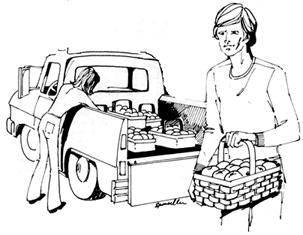

If you've been using natural methods to rebuild run-down land-as so many folks are nowadays-sooner or later your orchard and garden will begin to produce steady bumper crops. And, once you have more produce than you have dollars, you'll begin thinking about trading some of the first for a supply of the latter.
But just how do you make that trade happens? Is there a law in your state that can keep you from selling home-grown fruits and vegetables door to door? Will you need a tax number? Do you have to mark and package your produce in any particular manner? What's the best way to approach potential customers . . . and where do you find them? How should you dress?
Well, our back-to-the-land family has been peddling produce door to door in Washington state for several seasons now and we have a few field-tested answers to the questions that can seem so terrifying in the beginning. Perhaps our experiences will help you tap the ready market we've found for naturally-grown fruits and vegetables . . . and turn you on to a welcome source of homestead income.
In our opinion, no greenthumber should ever set out to sell excess vegetables, fruits, nuts or berries without first checking with the Department of Agriculture or Fruit Commission of the state in which he lives. Just drop `em a note . . . that's all it takes. The folks who receive your letter will route it to the proper agency (and that can take weeks, so start making your contacts a long time before harvest) and the agency will advise you of all the ground rules that apply in your case.
Here in Washington state, several laws quite obviously protect the big orchards at the expense of both the little growers and the consumer. For example, to haul another gardener's produce with our own, we must purchase something called a cash-buyer's license. If we sell more than a specified number of boxes of fruit or vegetables to one customer, we're required to pay a state inspector to examine the load. We must also buy a peddler's license for the appropriate area if we wish to make sales within the incorporated limits of a city . . . or else run the risk of a heavy fine. If your state imposes a retail sales tax, you'll find that it's also vitally important for you to obtain a tax number in order to make retail sales (and collect the tax commission's loot).
There are ways around most of these restrictions, however. If your state is really heavy on the red tape, for instance, you might even consider selling out of state. We once wrote Montana's Department of Horticulture. The agency helpfully mailed back explicit instructions for marketing produce in that state and we found that it definitely is worth our time to sell fruit in Montana.
You may even find that the wording of some peddling regulations is more scarifying than the enforcement. For example, in almost every town in which we've sold, at least one local supermarket has report ed us to the tax inspector . . . thereby helping us make a sale. For every tax inspector that has stopped us has asked how we were doing, snickered about the tattletale market that called him . . . and bought some of our produce! In one small town, it was a groovy marshal who asked if we had raised the fruit and inquired about our tax number (we have one, by the way). "Say, those are the prettiest apricots I've ever seen," he added . . . and gave us his home address where his equally turned-on wife bought eight boxes!
Another time we inadvertently crossed the invisible line into incorporated city limits while out selling. That could have been serious because-since we honestly intend to knock only on doors outside such limits-we've never purchased a peddler's license. Luckily, the cop who caught us was a fruit lover and, contentedly munching cots as if they were popcorn, cordially pointed out the dividing line and shooed us back to the other side.
When we first started peddling produce, we made the mistake of wearing college clothes (for the quaint reason that we didn't want strangers to think we needed money!) Very shortly, my wife went on strike. "These awful patent leather shoes scuff before we're halfway through selling a load," she said, "and I can't bend over in this tight skirt. I'm going into town to get some sensible clothes."
So right into an unincorporated town we'd never before visited went the fruit-loaded pickup . . . and determined young Mrs. Foraker had her new pedal pushers and cool canvas shoes on in time to greet the druggist, baker and hardware store owner who were quickly attracted by our produce. They all bought fruit and insisted we stop at relatives' homes. We sold out in no time.
We learned two things that day: (1) Be comfortable and (2) Good customers are easily found in the small business districts.
Sincerity outranks appearance. Our best friend, Betty, always made her rounds wild-haired and barelegged and wore only a shapeless shift over 180 pounds of shortness that was unrestrained by underwear. She outsold everyone.
Betty's secret of success was her warm heart. She never felt the business of selling fruit was more important than making friends. She never acquired that panicky look that can be so easily caused by a load of fruit in hot weather. She taught customers how to make apricot nectar and that your own always tastes better than the best in the store. She carried along little jars of home-canned goodies and spooned them into interested people. To strangers, she passed out samples of her own pickled pears, cots canned whole, pickled cling peaches and canned whole peaches. Betty is gone now, dang it, but I'm certain that many housewives, home canners and fruit lovers remember her most fondly.
It's absolutely impossible to predict which houses will buy fruit. A neat yard often indicates a canner . . . but it can also mean fruit trees in the back yard. A torn-up lawn and broken steps on the front porch might very well signify that many children live in the home and their harried mother could well be waiting just inside the door, anxious to buy half your load.
When I walk up to a house I've never before visited, I knock and-when the door is opened-say, "Hello, I'm selling peaches and pears." The housewife probably has seen our pickup coming and already has an idea whether or not she wants fruit. If she asks about variety, price and when our produce was picked . . . she'll usually buy.
We often carry several varieties of apples and cots. If the customer comes to the truck and says, "Oh dear, I don't know which to try," we let her sample each. We tell her about the varieties we prefer fresh and the ones we like for nectar, drying, canning sliced aid canning whole. We also mention that other families sometimes have other preferences.
If the customer can't make up her mind and only wants to buy one box of fruit, we mix equal amounts of different varieties and mark them for her. Folks appreciate this extra service and soon get quite expert on specifying the different varieties themselves.
Word of mouth is the single most important key to selling fruit or vegetables. If your produce is fresh and ripe and your prices reasonable, the whole town will soon know about it. I've gone into a brand new community just to sell to a relative of a client in the last town . . . and ended up marketing my whole truckload by going to the houses that each buyer suggested I visit. Word that our produce was worth buying had preceded me.
Now, of course, we know our regular customers as well as we know our neighbors but when we started out we remembered them by jotting down their addresses and little notes: "Hates cots, loves peaches." "Not home Wednesdays." "Makes jam." "Save five boxes of little Red Elbertas for this one."
We also wrote the names of children and pets on those notes so that-on the next call-we could ask, "Where's Richie today?" or holler, "Hi Baron," just as the huge German Shepherd knocked us flat. People appreciated our thoughtfulness in remembering their households by name and, after a few trips, the notes were no longer necessary. In addition, we found that listing only the houses that bought saved us much time on each later trip.
Because we return to the same neighborhoods every year, we keep our prices as low as possible. Inflation last year forced our price for a 20-pound lug of fruit up to the $1.50$2.25 range but some growers charge $2.50 to $4.00 for the same lug and markets often get two to four times our price for fruit picked green. We pick the morning of the day we sell and our prices are right and our customers know and appreciate it.
We started out-wrongly-using one size box and carrying scales for people who wanted just a few pounds of produce. Now we have four box sizes (including a very small one that holds about eight pounds) and we do no more weighing. We fill the boxes level-so we can put another box on top without crushing any fruit-and sell that amount for a set price. Fruit constantly settles and we've found that it's the best policy to start a sale with the boxes low and "top them off" right under the buyer's nose.
Since cardboard lugs cost about 25 cents each and wooden boxes even more, we help hold the line on prices by displaying our produce in cardboard lugs but-whenever possible-putting the fruit over into the customers' containers upon sale. We keep paper bags on hand for the folks who have no ready containers. Fresh newspapers inside our lugs keep them looking new and the damp washcloth we carry along cleans up hands that get sticky from handling fruit.
Sometimes we do sell the boxes but a state law demands that we then mark the lug with name of grower, pounds minimum and variety of fruit. There are also restrictions on kinds and sizes of box that may be sold and, as previously mentioned, the lugs cost money. It's better to transfer the fruit.
Transferring also gives us a gimmick: we are able to guarantee our produce. If we spot any crushed or badly marked fruit during the exchange from box to container, we remove the offending piece and replace it. Then we give the "bad" fruit to someone who wants to make jam or butter. So far we've run into only two instances where this guarantee has been abused.
In one town were two little old ladies who dearly loved fresh fruit. Each time we came through, they left word-with everyone in town-that we should stop in. And on their porch would always be rotted fruit from our last trip. They wanted fresh replacements . . . but they were sweet ladies and they always had coffee and pastry and much happy talk for our family so we obliged.
Another customer liked to purchase several boxes of cots, sort out only the very best and let the rest rot. Naturally, she demanded replacement produce on our next trip. We gave it to her, then-when neighbors on both sides warned us of this woman's chicanery-we simply made a note of her house and avoided it thereafter.
We also avoided supermarkets early in our peddling career, thinking that all such establishments would consider us to be competition. Then one manager opened our eyes by running us down and buying a whole truckload of produce. Supermarkets like to sell pretty fruit too, it seems, and many of our friends now find that their local markets will take all the fresh berries and vegetables they can get. I've even noticed that one such market places an "Organically Grown" sign above a friend's display, charges more for the vegetables . . . and sells them faster than the less colorful, insecticide-herbicide-contaminated produce alongside.
To sell to a supermarket just ask for the manager, tell him what you have and how much you want. He'll probably look at the produce and, if he likes it, tell you where to make a delivery. Two advantages of such sales are (1) you dispose of more of your goods with less effort and (2) the state considers you a wholesaler in one of these transactions and you don't have to hassle the retail sales tax on the deal. We always show our appreciation by skipping houses in the vicinity of the markets that handle our fruit.
Peddling produce is not always fun, games and easy sales. One 100° day we drove 50 miles and, when we started to sell our fruit, found it scalded. We had to give away the whole top layer. We tried canvas over the next load. The canvas flopped and bruised the fruit and, again, we lost the top layer. Putting blankets over the produce and under the tarp finally solved the problem. A better solution to both heat and rain is a plywood top securely fastened over the truck bed.
Good overload springs and shock absorbers are necessary to help ripe fruit take bouncy travel without damage. If your vehicle is under par in this department, blankets folded beneath the bottoms of your produce boxes will be a big help.
Stacking lugs is a challenge. We finally got 42 into a `41 Ford coupe but our Jeep pickup easily holds over 100 and is nicer to load and unload.
In the beginning, when pears ripened before they were sold, we marked them down. Now we place lugs of yellow ones side by side with the green and charge 50 cents a box more for the ripe ones. For some reason I don't understand, they sell much faster this way than when we used to cut their price.
We sold plums only in small boxes until our family chanced upon plum nectar. It's rosyish, made exactly like apricot nectar and tastes like prune juice. We were so delighted with the concoction that we passed the idea along . . . and we now sell several large boxes of plums to many of our customers.
We peddle our produce in about 10 small towns and we can sell up to 50 trees of each fruit we handle. A neighbor of ours finds that he can do very well selling his two acres of naturally-grown vegetables right in his home town. The market is definitely expanding for fresh homestead produce and "naturally grown, no chemicals or pesticides" is an extra strong selling point that, happily, seems to get even stronger each time another community bans DDT.
By the way, if peddling scares you, you can always sell your naturally-grown fruits and vegetables from a roadside stand. If you don't have a suitable location, make a deal with a friend or customer who does. We sell much of our fruit right on the highway this way and the main secret is an attractive stand and lots of room to park. The best signs, we've found, are white with red letters. Since harvest dates can vary from year to year, we keep a mailing list of past customers and always advise everyone of the date a new crop will ripen. This virtually guarantees a sellout.
In our opinion, though, peddling is too much fun to miss . . . especially if you make it a festive family affair. Matter of fact, it's even more fun if you let outsiders get into the act. The more, the merrier. When we noticed that our toddler son, Dave (who was ringing doorbells because he dug it), was selling as much as his mother we decided that the more doorknockers we had, the better. Now, when we come across a likeable youngster or two, we take them along (after asking their parents, of course). Later, when we bring the children back we pay them and give their mothers a box of fruit for the help. This way, our peddling trips become a grand adventure for everyone.
|
 |
|
|